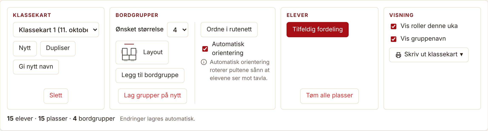
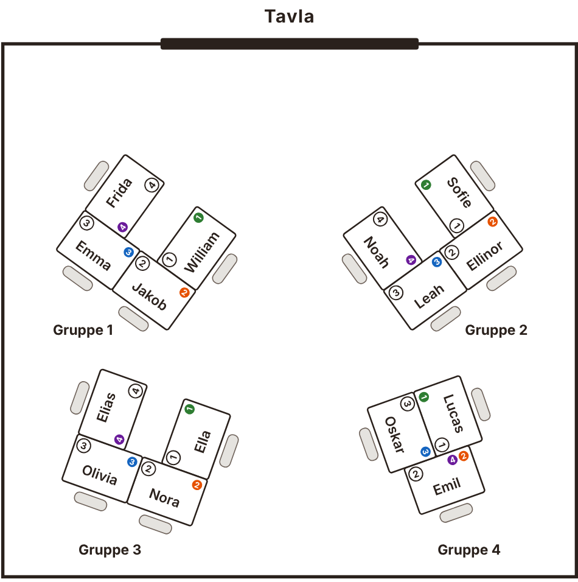
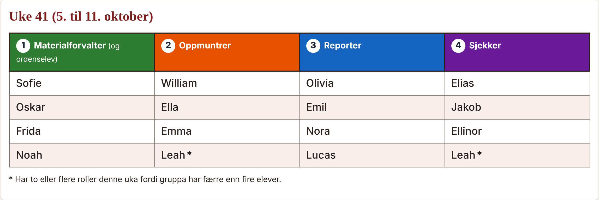
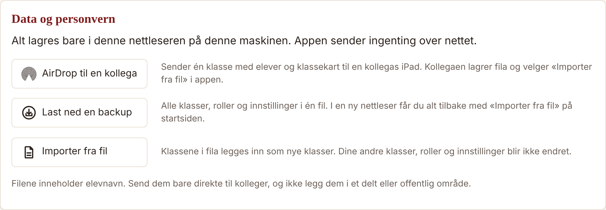

En kort guide
Lag klassekart med bordgrupper, og la appen fordele samarbeidsrollene. Rollene byttes automatisk hver uke, og alt kan skrives ut.



Finn knappene under Innstillinger → Data og personvern.
